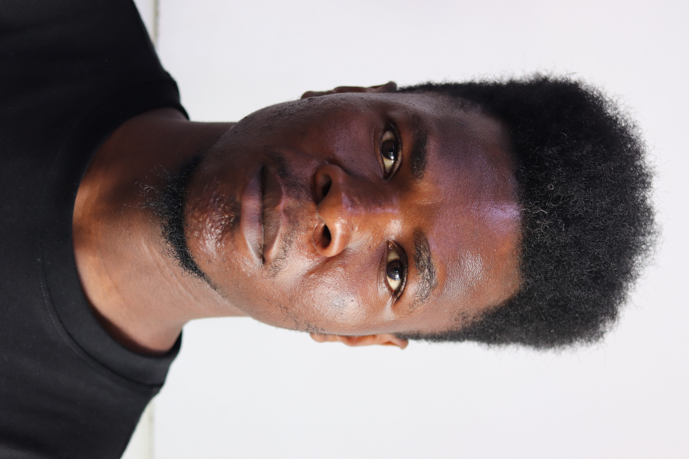

Dieudonne Kolony

Summary
Highly motivated and detail-oriented Civil Engineering professional with
hands-on experience in structural design, and hydraulic systems. Proven
track record of enhancing project workflows, ensuring quality assurance,
and leading multidisciplinary teams to achieve timely project completion.
Adept at utilizing advanced software tools such as AutoCAD, Revit, Civil
Designer, and AllyCAD to deliver innovative engineering solutions.
Education
Advanced Diploma in Civil Engineering
Cape Peninsula University of Technology, Cape Town
Jan 2023 - Dec 2023
National Diploma in Civil Engineering
Cape Peninsula University of Technology, Cape Town
Nov 2017 - Dec 2020
Work Experience
DeVS-SiVEST - Rondebosch - Cape Town
Civil Engineering Intern
-
Assisted senior staff during 30+ on-site inspections with contractors
-
Created structural drawings for 25+ projects using AutoCAD and Revit
-
Enhanced drafting and design skills through hands-on work on 10+ diverse
projects
-
Collaborated with multidisciplinary teams, improving workflow efficiency
by 15%
-
Conducted 20+ site visits to ensure construction aligned with design
specifications
Projects
Water Treatment and Urban Planning -
CPUT
, Cape Town
-
Led the hydraulic design and water treatment process selection for a
comprehensive water treatment Project
-
Planned and designed a township project with 100 erven, utilizing Civil
Designer and AllyCAD
Quality Assurance Enhancement - Civil Designer, Cape Town
-
Collaborated with developers to ensure software quality through
comprehensive manual and automated testing
-
Identified and resolved software bugs and glitches prior to the release
of version 9.0
-
Coordinated cross-team efforts to improve testing efficiency and
problem-solving capabilities
Additional
Technical Skills:
- AutoCAD
- Revit
- Surveying
- Structural Analysis,
- Project Management,
- Civil Designer,
Soft Skills
- Communication
- Collaboration
- Problem-Solving
- Strategic Planning
- Quality Assurance
Languages
- English - Fluent
- Fresh - Intermediate
Awards and Certifications
- Excel Essential Training (Microsoft 365)
- Programming Foundations Fundamentals
- Strategic Planning and Urban Design Foundations
- Smart Cities: Solving Urban Problems Using Technology
Other
Hobbies
Contact